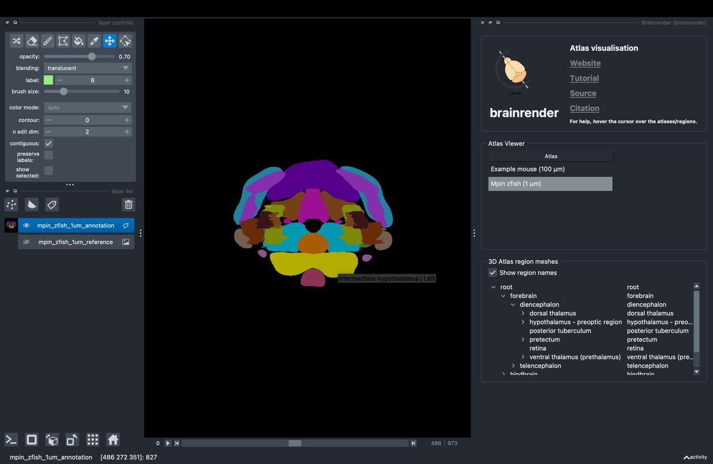

Visualise an atlas in napari#
BrainGlobe atlases are made of different components. These include the annotations image, the (default) reference image, 3D atlas region meshes and, optionally, additional reference images. In this tutorial, you will use brainrender-napari to visualise each of these components in the 3D viewer napari through a series of simple clicks. The mpin_zfish_1um zebrafish brain atlas will serve as an example.
Note
You will need napari installed on your computer - please follow napari’s installation instructions to do so.
Open
napari.Install
brainrender-napariby selectingPlugins > Install/Uninstall pluginsand searching forbrainrender-napariin the searchbox. Then click on theInstallbutton.
Note
If you’ve not used BrainGlobe atlases before, you will need to download those you need. You can do this through the command line, or by following our (very short) “Download an atlas in napari” tutorial.
Open the
brainrenderwidget by selectingPlugins > brainrender > Brainrenderin the napari menu bar near the top left of the window.
The brainrender widget appears on the right hand side of the window, listing all atlases you have downloaded
In the
brainrenderwidget’sAtlas Viewersection, double-click the row which contains thempin_zfish_1umatlas (you may have to scroll down slightly, if you’ve downloaded many atlases).

You have now added the annotations image and the default reference image to napari: They appear as layers in the napari layers list on the lower left of the window. A 3D Atlas region meshes section appears below the Atlas Viewer section.
Hover your mouse over any brain region in the
3D Atlas region meshessection to see a tooltip with information about that region. Toggle the napari display from 2D to 3D by pressing the button with the square icon on the lower left of the window.

The annotations image should now be displayed in 3D.
Navigate the brain region tree in the
3D Atlas region meshessection by opening “forebrain”. Double-click ontelencephalon.

You have now added a 3D atlas region mesh layer, which appears as a mesh in the viewer and as a new layer in the layers list.
Back in the “Atlas Viewer” section, right-click on the
mpin_zfish_1umrow. In the menu that appears, selectGAD1b.

You have now added an additional reference image, which appears as a grey scale image in the viewer and as a new layer in the layers list.
You have now added all possible kinds of BrainGlobe atlas components (annotations image, reference image, 3D atlas region mesh, additional reference) to napari! You can now add any of the other atlases listed in the Atlas Viewer section if you like (note that not all atlases have additional references!).
Note
Hover over any of the elements in the brainrender widget to get additional hints about how to use them!